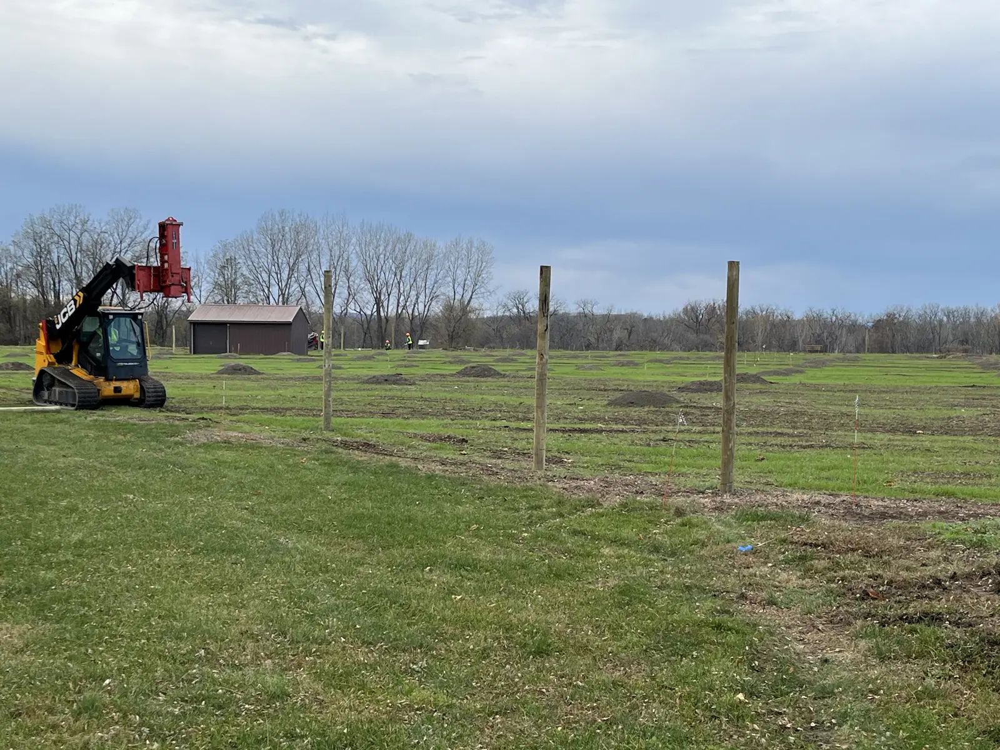

まず購入予定のメーカーが一般消費者による施工を認めているか確認してください。フェンス製品の中には、DIYを想定せず専門店への依頼を案内しているものがあります。
目隠しの位置と高さを、穴を掘る前に試す
試すのは庭先の一角。メジャー、段ボール、筆記具を用意し、二人で室内側と庭側に立ちます。固定用の柱やアンカーの購入は、位置と設置方式が決まってからです。
- 遮りたい視線を一本決める
室内で普段座る椅子と、庭で見え方を確かめる位置を決めます。敷地内で段ボールを手に持ち、全体を覆わずとも気になる方向だけを隠せる高さを探ります。
- 通り道と設備を確かめる
位置をひもで示して、玄関扉を開け、荷物を持って通ります。雨水ますのふた、メーター、隣地との境界、強風時に風を受ける面を図に記入します。
- 置き型と固定式を選び分ける
短時間使うなら屋外用の可動式も候補です。脚を広げた実寸を床に写し、収納場所まで運べるか確かめます。常設型は、その製品の基礎・取付先・耐風条件と、地中設備の位置が確認できてから計画します。
- 置き型は片付けまで試す
平らな地面で説明書どおりに脚やロックをセット。晴れて風の弱い日に見え方を試し、利用後はたたんで収納します。強風予報の前に退避できる場所を決めます。
仕上がりの確認と、つまずいたときの直し方
- 仕上がり
- 座位・立位で必要な部分が隠れ、人や自転車が脚に当たらず、出入口と設備の点検動線が空いていること。
- 風で動くなら
- 使用を中止して収納します。不明な重り、布の追加、既存ブロックへの後付けで風をしのぐ方法に変更しません。
最初に確認するのは「設置できる場所」
フェンスの高さ、柱のピッチ、風の通り道、既存ブロック塀や擁壁の状態、境界の位置を確認します。目隠し性が高いパネルは風の影響を受けます。既存の塀に固定できるかどうかも商品や構造条件によって異なります。
支柱の穴を掘る前に、地下の配管を確認
庭の柱基礎でも、敷地内にガス管や給排水管、電線・通信線が通っていることがあります。建物図面や過去の工事記録を見て、掘る予定位置と深さを整理し、該当する設備の管理者へ事前に照会してください。図面に記載がないことや、地表に目印がないことだけで「埋設物なし」と判断しないのが安全です。
- フェンスの線と基礎位置を地面に仮表示し、境界と既存設備の位置を確認する。
- ガス管が不明な場合は、日本ガス協会の地域別窓口から供給事業者を調べ、掘削前に照会する。
- 給水・排水・電気・通信も、それぞれの管理者や自治体の窓口へ確認する。
- 位置・深さが特定できない、または計画位置と近接する場合は、自己判断で掘り始めず位置変更や管理者立会い等の方法を確認する。
国土交通省の土木工事資料でも、埋設管は台帳等だけで済ませず管理者との現地確認で位置を明確にするよう示されています。これは公共工事の施工者向け資料で、家庭DIYの規則を定めたものではありませんが、掘削前に管理者へ確認する重要性を理解する参考になります。
DIY候補と専門施工が必要になりやすい場面
| 作業 | 判断の視点 |
|---|---|
| 庭の小物・簡易スクリーン | 自立方法や商品説明に沿った軽作業ならDIY候補 |
| 地面への柱基礎 | 転倒、埋設管、基礎寸法、風荷重を確認 |
| 既存擁壁・RCへの穴あけ | 配筋・構造安全・ひび割れ・止水を含み専門確認が必要 |
| 転落防止を担うフェンス | 用途に応じた基準・設計・専門施工を優先 |
本体だけでなく、施工と維持管理の総額を比べる
本体と柱の価格だけで判断せず、同じ条件で必要項目をそろえます。DIYでは施工費を抑えられる場合がありますが、工具の買い足しや搬入・処分も計上しましょう。
| 材料・固定 | パネル、柱、金具、基礎材、予備材。品番ごとの施工要領で数量を確認。 |
|---|---|
| 作業の準備 | 工具購入・レンタル、運搬、養生、作業人数と日数。 |
| 付帯・復旧 | 残土・撤去材の処分、既存構造物の補修、必要な調査や専門工事。 |
| 維持管理 | 固定部・腐食・傾きの点検と、将来の補修・交換。 |
高さや目隠し率が変われば風荷重と基礎条件も変わります。外観が似た部材を流用せず、メーカーの指定を確認してください。
DIYと業者依頼の境界線
庭の目隠しなどの軽量な柵でも、メーカーが定めた基礎・支柱間隔・風荷重への対応が必要です。高所や転落のおそれがある場所、道路沿い、防護・防球目的、既存擁壁・建物躯体への取付けは専門家へ相談する判断を優先してください。自治体・管理組合・隣地との境界条件も事前確認が必要です。
商品購入前の5チェック
- 品番ごとの施工説明書が公開されているか、DIY施工が認められているか。
- 支柱・パネル・金具・端部キャップが全て必要数量そろうか。
- 柱の固定方法と基礎寸法を施工説明書で確認できるか。
- 搬入経路・施工道具・2人以上の作業が必要かを把握したか。
- 施工不備の場合の保証・返品条件と補修方法を把握したか。
「後から穴をあける」は誰が担当する？
すでにコンクリート基礎や擁壁がある場合、支柱位置の孔をあけられる可能性はあります。しかし配筋・埋設物、端部距離、固定耐力の判断が必要で、家庭用ドリルで大口径の孔をあけることを安易に勧められません。構造の確認と専門業者の見積りを取ってから、商品購入に進む方が手戻りを抑えられます。
メーカーの施工条件と保証に注意
YKK APは一般向けFAQで、自社フェンスなどは一般利用者自身による組立て・取付けを想定していないと案内しています。商品によって異なるため、メーカーの現行施工要領と保証条件を必ず確認してください。YKK AP公式FAQを確認 ↗
コア削孔は方法の一つですが、支柱固定が安全になることを保証しません。設計・配筋・防水や止水、荷重の検討が必要です。工法の考え方はこちらの記事で比較しています。
買い物リストをつくるなら
工具より先に、製品の施工要領、使用場所の寸法、基礎仕様を確認します。そのうえで必要な水平器・メジャー・手袋・保護具などを整理してください。
この作業に使う道具・材料
広告 Amazonの商品紹介リンクを含みます。
- 折りたたみ式の目隠し
脚を開いた寸法、強風時の扱い、たたんだ時の収納寸法を確認。屋内用の衝立は対象外です。
Amazon.co.jpで折りたたみ式の目隠しを探す - 巻尺
視線を遮る高さと脚の張り出しを別々に測ります。印付けは手持ちのひもで足ります。
Amazon.co.jpで巻尺を探す